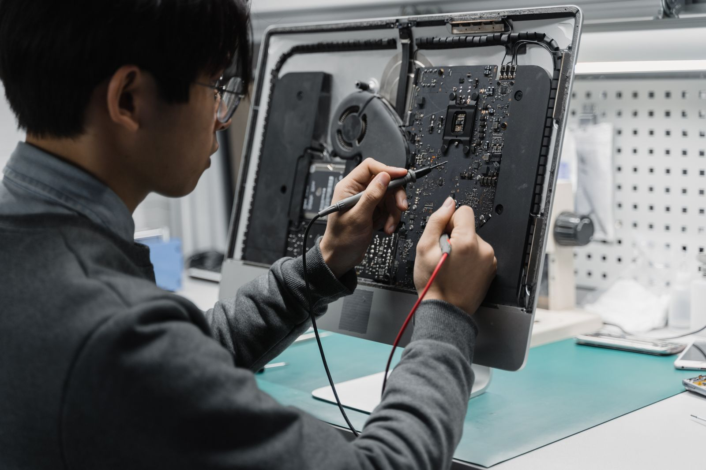

Diagnóstico claro
Uma avaliação inicial para identificar o problema e orientar os próximos passos.
Computador travando, ferramentas desconfiguradas ou dúvidas técnicas? Entenda o que está acontecendo com uma orientação clara.
Uma avaliação para definir a melhor forma de atender: online ou conforme a necessidade do equipamento.

Uma avaliação inicial para identificar o problema e orientar os próximos passos.
Organização de programas e ferramentas para uma rotina mais prática.
Suporte online quando o caso permitir, com orientação durante o atendimento.
Uma conversa para entender o que você procura.
Serviços e condições combinados antes de começar.
Depois da aprovação, alinhamos a execução.
Neste modelo, seu cliente descreve o problema pelo WhatsApp. O orçamento e a forma de atendimento são combinados depois.
Quero este modelo para meu negócio ↗Esta demonstração não recebe agendamentos ou pedidos do negócio fictício.
O contato acima é com a Solvi.